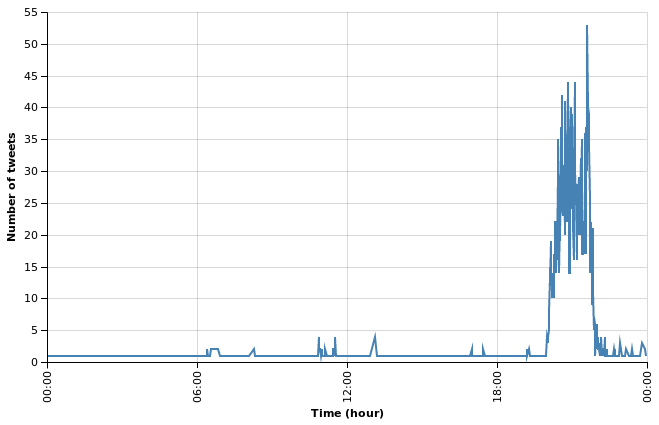

The Voice Afrique Tweets Mining Part 1
The Voice Afrique francophone (TVA) is a singing competition where contestants are chosen based on thier voice during a performance where the coaches face the public and can only hear them. The show started on Sturday, 15 October and will go until February, the 4th 2017. The show is broadcasted on Vox Africa. For more information, you can look here.
In this post series, we will use various data science tools to analyse the tweets we collected about the event.
Collecting Data
To collect the data we needed in our analysis, we will the REST API provided by Twitter. From the Twitter documentation:
The REST APIs provide programmatic access to read and write Twitter data. Create a new Tweet, read user profile and follower data, and more. The REST API identifies Twitter applications and users using OAuth; responses are in JSON format.
Twitter also give to users a Streaming API
which is a way of getting tweets about an event in real time. But since we don't
monitor the data in real time, will stick on the rest api. And in order to make
our life easier, we will rely on Tweepy,
"An easy-to-use Python library for accessing the Twitter API". For persitence,
we use MongoDB to store the tweets in the thevoice
collection under the search database. How to set up MongoDB is beyond the scope
of this post. Visit the documentation
to get started with Tweepy.
The code below is in the search_and_store.py file and it assumes you have MongoDB
running on your local machine.
import os import sys import json import time import tweepy import pymongo host = "localhost" port = 27017 consumer_key = "CONSUMER KEY" consumer_secret = "CONSUMER SECRET" db = pymongo.MongoClient(host, port).search # search's database auth = tweepy.AppAuthHandler(consumer_key, consumer_secret) api = tweepy.API(auth, wait_on_rate_limit=True, wait_on_rate_limit_notify=True) if not api: print("Can't Authenticate!") sys.exit(-1) query = "#TheVoiceAfrique OR TheVoiceAfriqueFrancophone OR \ #teamLokua OR #teamCharlotte OR #teamSinguila OR #teamAsalfo OR \ #equipeLokua OR #equipeCharlotte OR #equipeSinguila OR equipeAsalfo" max_tweets = 1000000 ids = set() count = 0 for tweet in tweepy.Cursor(api.search, q=query, lang="fr", count=100).items(max_tweets): tweet = tweet._json if "retweeted_status" in tweet.keys(): rt_tweet = tweet["retweeted_status"] # grab the retweeted tweet id_str = rt_tweet["id_str"] if not(id_str in ids): ids.add(id_str) id = db.thevoice.insert_one(rt_tweet).inserted_id print(id) id_str = tweet["id_str"] if not(id_str in ids): ids.add(id_str) id = db.thevoice.insert_one(tweet).inserted_id print(id) count += 1 print("Downloaded {} tweets".format(count))
The code above connects to Twitter, search for tweets with the terms in the query variable, store the result in the thevoice collection if the tweet is not already downloaded (with search queries, we often get redondant results). The code also check if it is a retweet and if so, store the original tweet if not already in the database (with search queries, the original tweet of a retweet is often missed). I ran the script on November, 07 2016 at 1pm and it collected 4998 tweets (inluding retweets ~ 61%) ranging from 14/10/2016 to 07/11/2016.
from collections import defaultdict from datetime import datetime import pandas as pd import pymongo import altair host = "localhost" port = 27017 db = pymongo.MongoClient(host, port).search def strptime(ts): cformat = "%a %b %d %H:%M:%S %Y" uformat = "%a %b %d %H:%M:%S %z %Y" ctime = datetime.strptime(ts, uformat).ctime() return datetime.strptime(ctime, cformat) tweets = pd.DataFrame({"created_at": [tweet["created_at"] for tweet in db.thevoice.find() if not("retweeted_status" in tweet)]}) tweets = tweets.assign(created=tweets.created_at.apply(strptime)) tweets = tweets.drop("created_at", axis=1) tweets["count"] = 1 print("Number of tweets: {}".format(len(tweets)))
Tweets frequency
We use Altair to visualize the tweets frequency.
altair.Chart(tweets).mark_line().encode( x=altair.X("created", timeUnit="hoursminutes", scale=altair.Scale(nice="hour"), axis=altair.Axis(title="Time (hour)"), ), y=altair.Y("count", aggregate="sum", axis=altair.Axis(title="Number of tweets"), ), ).configure_cell( width=600, )
With this graph, we can see that viewers are talking about the event only during the show, around 8pm and 10pm. Before and after that, it is a complete silence. In the next post we will start ask our data questions. Thanks for following.

Comments
Comments powered by Disqus